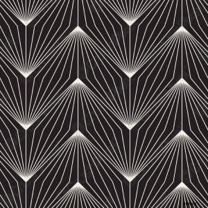

<!DOCTYPE html>
<html>
  <head>
    <title>Test - Boundary Extension Experiment</title>
    <script src="jspsych-6.3.1/jspsych.js"></script>
    <script src="jspsych-6.3.1/plugins/jspsych-html-keyboard-response.js"></script>
    <script src="jspsych-6.3.1/plugins/jspsych-image-keyboard-response.js"></script>
    <script src ="jspsych-6.3.1/plugins/jspsych-multi-stim-multi-response.js"></script>
    <script src="jspsych-6.3.1/plugins/jspsych-preload.js"></script>
    <script src="jspsych-6.3.1/plugins/jspsych-survey-likert.js"></script>
    <link href="jspsych-6.3.1/css/jspsych.css" rel="stylesheet" type="text/css">

</head>
<body></body>
<script>

/* preload images */
var preload = {
        type: 'preload',
        images: ['images/image1.png', 'images/image2.png','images/image3.png']
    }

/* welcome message */
var welcome = {
        type: 'html-keyboard-response',
        stimulus: `<p>Welcome! In this experiment, multiple images of scenery will be presented for a short period of time.
        <b> Try to remember those images in detail. </p> </b>
        <p>After the sequence, you will be presented images one more time and will be asked if the image matches. </p>
        <p>Press any key to begin.</p>`
    }

/* fixation */  
var fixation = {
     type: 'html-keyboard-response',
     stimulus: '<div style="font-size:60px;">+</div>',
     choices: jsPsych.NO_KEYS,
     trial_duration: 2000,
    }

/* test round 1*/
var stimulus1 = { 
      type: 'image-keyboard-response',
      stimulus: 'images/image1.png',
      choices: jsPsych.NO_KEYS,
      stimulus_width: 500,
      trial_duration: 2500,
    }

var stimulus2 = { 
      type: 'image-keyboard-response',
      stimulus: 'images/image4.png',
      choices: jsPsych.NO_KEYS,
      stimulus_width: 500,
      trial_duration: 2500,
    }

var stimulus3 = { 
      type: 'image-keyboard-response',
      stimulus: 'images/image5.png',
      choices: jsPsych.NO_KEYS,
      stimulus_width: 500,
      trial_duration: 2500,
    }

/* mask after test round*/
var mask= { 
      type: 'html-keyboard-response',
      stimulus: '',
      choices: jsPsych.NO_KEYS,
      trial_duration: 3000,
    }
  
/* repeating resized stimulus1 */
var response1 = { 
      type: 'image-keyboard-response',
      stimulus: 'images/image2.png',
      stimulus_width: 500,
      choices: jsPsych.NO_KEYS,
      trial_duration: 2500,
     }

/* Likert scale prep */
var scale_1 = [
  "Much larger than the first one", 
  "Slightly larger than the first one", 
  "The same", 
  "Slightly smaller than the first one", 
  "Much smaller than the first one",
  ];

/* Likert scale page */
var likert_page = {
  type: 'survey-likert',
  questions: [
    {prompt: "This depicted scenery appears:", labels: scale_1}
  ] }; 

/* repeating resized stimulus2 */
var response2 = { 
      type: 'image-keyboard-response',
      stimulus: 'images/image7.png',
      stimulus_width: 500,
      choices: jsPsych.NO_KEYS,
      trial_duration: 2500,
     }

/* Likert scale prep */
var scale_2 = [
  "Much larger than the first one", 
  "Slightly larger than the first one", 
  "The same", 
  "Slightly smaller than the first one", 
  "Much smaller than the first one",
  ];

/* Likert scale page */
var likert_page = {
  type: 'survey-likert',
  questions: [
    {prompt: "This depicted scenery appears:", labels: scale_2}
  ] };

 /* repeating resized stimulus3 */
var response3 = { 
      type: 'image-keyboard-response',
      stimulus: 'images/image8.png',
      stimulus_width: 500,
      choices: jsPsych.NO_KEYS,
      trial_duration: 2500,
     }

/* Likert scale prep */
var scale_3 = [
  "Much larger than the first one", 
  "Slightly larger than the first one", 
  "The same", 
  "Slightly smaller than the first one", 
  "Much smaller than the first one",
  ];

/* Likert scale page */
var likert_page = {
  type: 'survey-likert',
  questions: [
    {prompt: "This depicted scenery appears:", labels: scale_3}
  ] };


/* Debriefing */
var debriefing= {
        type: 'html-keyboard-response',
        stimulus: `Thank you! You've completed a first trial!`
    }

jsPsych.init({
    timeline: [preload, welcome, fixation, stimulus1, stimulus2, stimulus3, mask, response1, likert_page, response2, likert_page, response3, likert_page, debriefing ],
    on_finish: function() {
       // var csv = jsPsych.data.get().csv();
       // var filename = "BE_output.csv";
       // saveTextToFile(csv, BE_output.csv);
       jsPsych.data.get().localSave('csv','BE_output.csv');
       jsPsych.data.displayData()
      }});
</script>
</html>
